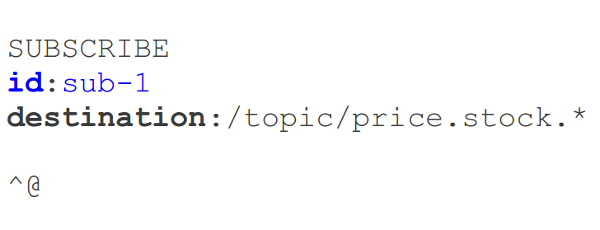

"The basic issue is there isn't enough information in an incoming websocket message for the container to know where to route it if there are multiple methods where it may land."
Danny Coward, JSR-356 lead
In response to question on user mailing list
| z, ? | toggle help (this) |
| space, → | next slide |
| shift-space, ← | previous slide |
| d | toggle debug mode |
| ## <ret> | go to slide # |
| c, t | table of contents (vi) |
| f | toggle footer |
| r | reload slides |
| n | toggle notes |
| p | run preshow |
java.net.Socket@since JDK 1.0spring-websocket
"The basic issue is there isn't enough information in an incoming websocket message for the container to know where to route it if there are multiple methods where it may land."
Danny Coward, JSR-356 lead
In response to question on user mailing list
"The subprotocol attribute of the handshake might serve as a useful place to attach this kind of message description/meta data, or some JSR356 specific headers in the handshake. Of course, the other issue is that the other end is often javascript, which would need to participate in some way in such a scheme."
"These are all things we'll likely look at in the next version."
From next reply on same thread


"Destination" Header"/queue/a", "/topic/a")
@Controller
public class GreetingController {
@MessageMapping("/greetings")
public String greet(String greeting) {
// Return value broadcast to "/topic/greetings"
return "[" + getTimestamp() + "]: " + greeting;
}
}